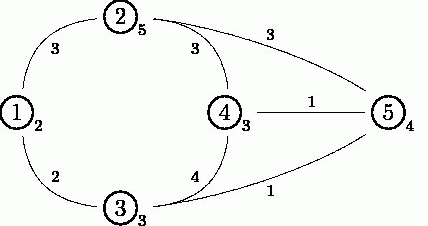

Notice:注册本OJ方式请见https://www.lydsy.com/JudgeOnline/wttl/thread.php?tid=5671
Problem 1774. -- [Usaco2009 Dec]Toll 过路费1774: [Usaco2009 Dec]Toll 过路费
Time Limit: 10 Sec Memory Limit: 64 MB
Submit: 448 Solved: 269
[Submit][Status][Discuss]Description
跟所有人一样，农夫约翰以着宁教我负天下牛，休叫天下牛负我的伟大精神，日日夜夜苦思生
财之道。为了发财，他设置了一系列的规章制度，使得任何一只奶牛在农场中的道路行走，都
要向农夫约翰上交过路费。
农场中由N（1 <= N <= 250）片草地（标号为1到N），并且有M（1 <= M <= 10000）条
双向道路连接草地A_j和B_j（1 <= A_j <= N; 1 <= B_j <= N）。奶牛们从任意一片草
地出发可以抵达任意一片的草地。FJ已经在连接A_j和B_j的双向道路上设置一个过路费L_j
（1 <= L_j <= 100,000）。
可能有多条道路连接相同的两片草地，但是不存在一条道路连接一片草地和这片草地本身。最
值得庆幸的是，奶牛从任意一篇草地出发，经过一系列的路径，总是可以抵达其它的任意一片
草地。
除了贪得无厌，叫兽都不知道该说什么好。FJ竟然在每片草地上面也设置了一个过路费C_i
（1 <= C_i <= 100000）。从一片草地到另外一片草地的费用，是经过的所有道路的过路
费之和，加上经过的所有的草地（包括起点和终点）的过路费的最大值。
任劳任怨的牛们希望去调查一下她们应该选择那一条路径。她们要你写一个程序，接受K（1
<= K <= 10,000）个问题并且输出每个询问对应的最小花费。第i个问题包含两个数字s_i
和t_i（1 <= s_i <= N; 1 <= t_i <= N; s_i != t_i），表示起点和终点的草地。
考虑下面这个包含5片草地的样例图像:

从草地1到草地3的道路的“边过路费”为3，草地2的“点过路费”为5。
要从草地1走到草地4，可以从草地1走到草地3再走到草地5最后抵达草地4。如果这么走的话，
需要的“边过路费”为2+1+1=4，需要的点过路费为4（草地5的点过路费最大），所以总的花
费为4+4=8。
而从草地2到草地3的最佳路径是从草地2出发，抵达草地5，最后到达草地3。这么走的话，边
过路费为3+1=4，点过路费为5，总花费为4+5=9。
Input
* 第1行: 三个空格隔开的整数: N, M和K
* 第2到第N+1行: 第i+1行包含一个单独的整数: C_i
* 第N+2到第N+M+1行: 第j+N+1行包含3个由空格隔开的整数: A_j, B_j和L_j
* 第N+M+2倒第N+M+K+1行: 第i+N+M+1行表示第i个问题，包含两个由空格隔开的整数s_i
和t_i
Output
* 第1到第K行: 第i行包含一个单独的整数，表示从s_i到t_i的最小花费。
Sample Input
5 7 2
2
5
3
3
4
1 2 3
1 3 2
2 5 3
5 3 1
5 4 1
2 4 3
3 4 4
1 4
2 3
Sample Output
8
9
HINT
Source
[Submit][Status][Discuss]
HOME
Back